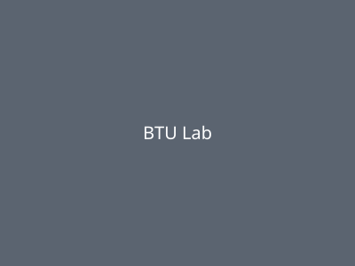

Home
Welcome

BTU Lab is the maker space over in ATLAS where you can go build stuff — 3D printers, a woodshop, laser cutters, all that, plus people around who actually know how to use it.
Where to go from here
- About — who we are, what we care about, our anti-harassment policy.
- Tools & Equipment — everything from 3D printing to CNC.
- Get Access — who can use the lab and how to get started.
- Events & Community — workshops, Open Hack Nights, classes.
- People & Contact — who runs the place and how to reach us.